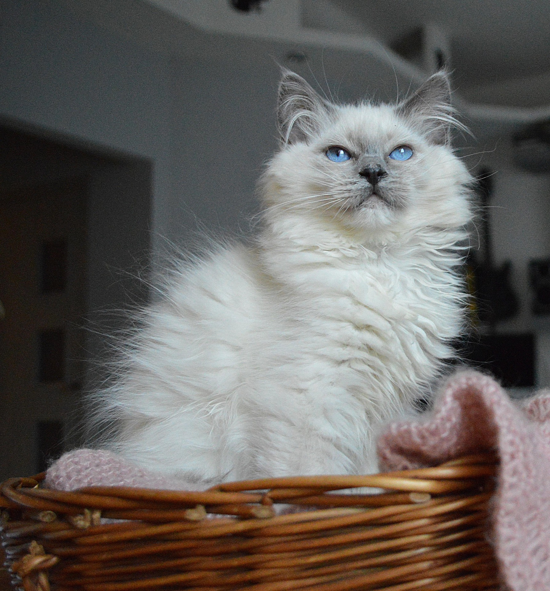
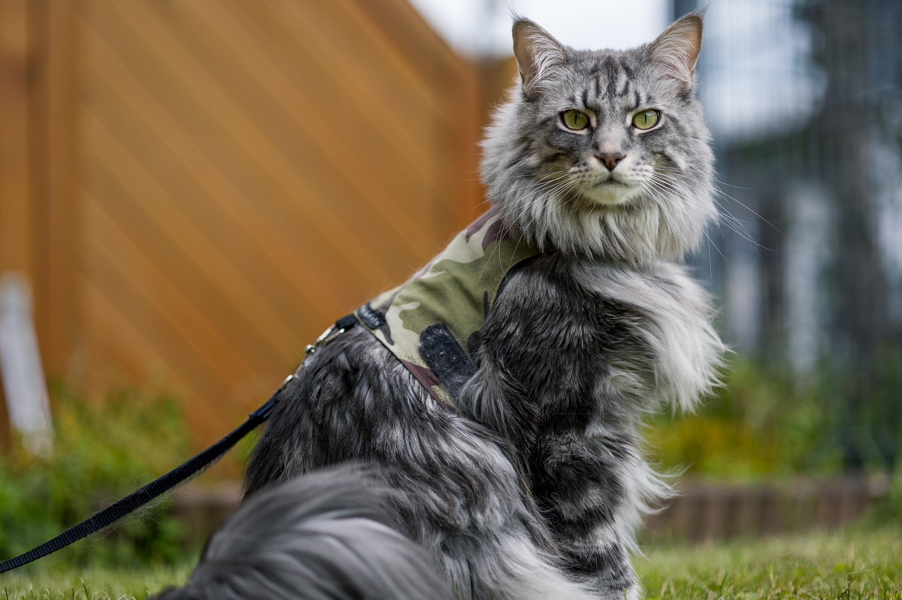
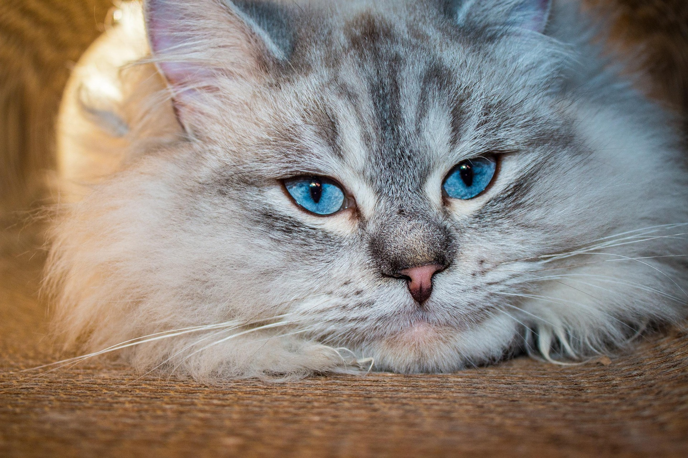

Mitt intresse för katter
Varför jag tycker om katter
Jag har alltid tyckt mycket om katter då jag vuxit upp med dem. Min egen katt Oliver är en sibirisk katt och mitt intresse för katter har gjort att jag tycker om att lära mig mer om olika kattraser.



Katten genom historien
Katten har levt tillsammans med människan i flera tusen år. I den gamla Egypten ansågs katten vara helig och med tiden spreds tamkatten vidare till andra delar av Europa. Under medeltiden fick katten ett dåligt rykte och förknippades bland annat med häxor, men under 1800-talet ökade intresset för katter igen. År 1871 anordnades världens första kattutställning i London.
Källa: SVERAK
Vanligaste raskatterna i Sverige
| Kattras | Antal 2025 | Antal 2024 | Placering 2025 |
|---|---|---|---|
| Maine coon | 2050 | 1968 | 1 |
| Ragdoll | 2033 | 2113 | 2 |
| Sibirisk katt | 1438 | 1399 | 3 |
Läs mer om kattraser och statistik hos SVERAK